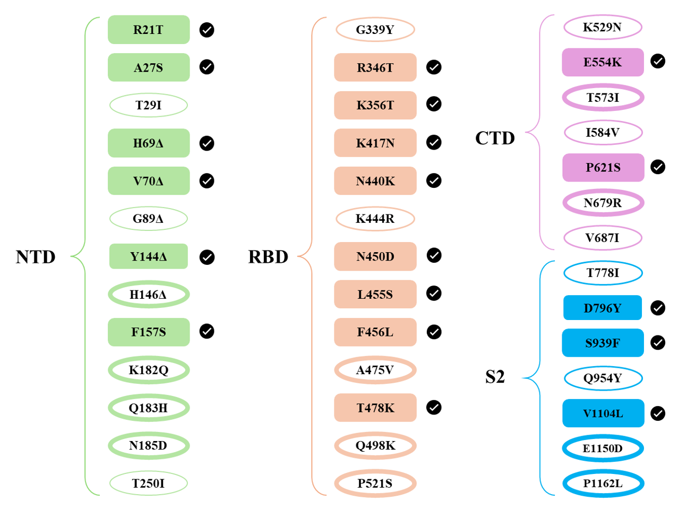
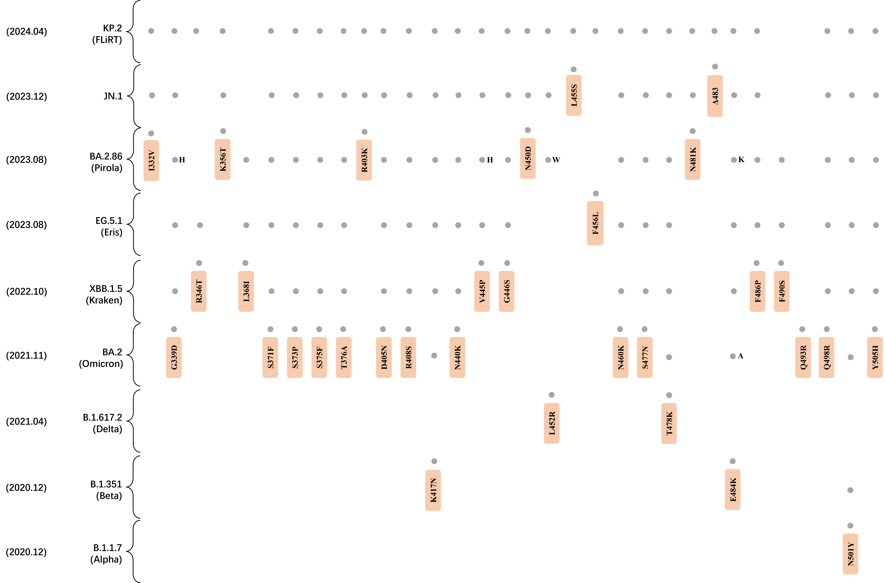
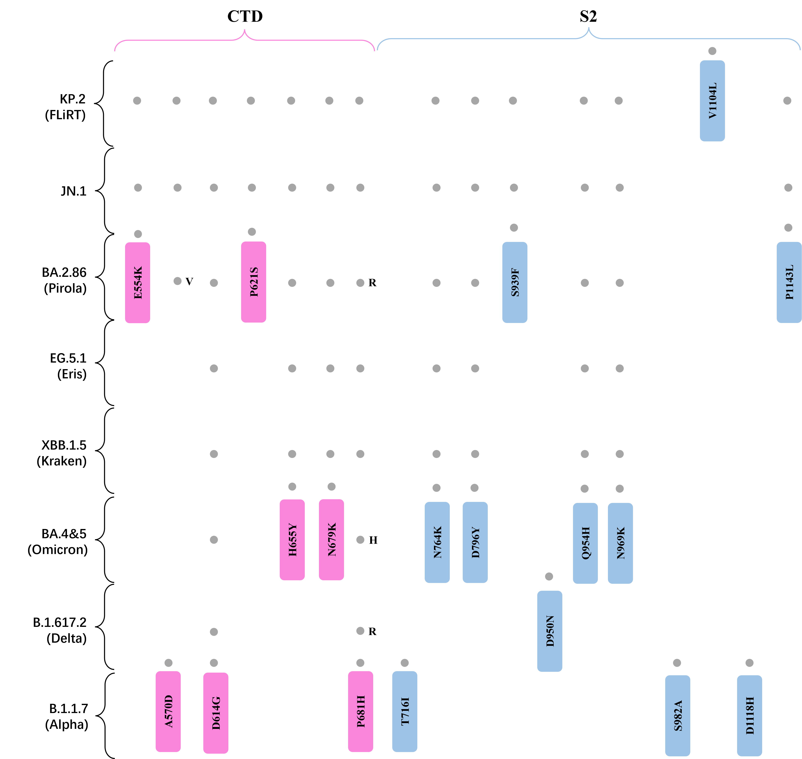

KP.2 Lineage
The KP.2 (JN.1.11.1.2) variant is a recently emerged SARS-CoV-2 descendant of JN.1, with mutations that may influence spike behavior and immune escape.
Background
The World Health Organization elevated JN.1 from a variant under monitoring (VUM) to a variant of interest (VOI) on 18 December 2023, and it became the dominating strain across the globe. The KP.2 variant, a descendant of JN.1, was designated as a VUM on 3 May 2024 shortly after its emergence. [1]
KP.2 exhibits two distinct mutations in the RBD, R346T and F456L, which gave rise to the nickname "FLiRT", accompanied by V1104L in S2 in comparison with JN.1. Amino acid residues 346 and 456 are located within epitopes targeted by neutralizing antibodies and have been observed undergoing substitutions in past variants, such as R346T in BQ.1 and XBB, and F456L in EG.5 and HK.3. [2]
Evolution of Omicron Subvariants

KP.2 Mutations
In 2024.03, the mutations outlined and confirmed by KP.2 are listed below.
2024.03 outlined

Featured Mutations: L455S, F456L
As a characteristic mutation of the JN.1 variant, L455S was discovered at the beginning of the epidemic of JN.1. On the one hand, it reduced the binding capacity of RBD-ACE2 during in vitro ACE2 binding tests, but on the other hand, it increased viral infection in pseudovirus tests (using BA.2.86 strain as a reference). [3] This result may be caused by L455S altering the RBD open-close conformation dynamics at the partially open stage. [4]
The substitution of leucine with serine results in a shift from a non-polar to a polar amino acid, causing increased hydrophilicity, which could drive exposure of the receptor binding motif to solvent. Now that the F456L mutation continues to occur and the hydrophobicity is further reduced, the spike protein may be gaining a higher opening tendency.
KP.2 Spike Conformation

Main Mutations
KP.2's main mutations in other prevalent variants are summarized below.
KP.2 RBD

KP.2 CTD&S2

KP.2 Scientific Profile
| Field | Observation | Significance |
|---|---|---|
| WHO status | Variant under monitoring | Tracked for emergence and spread dynamics |
| Key RBD changes | R346T, F456L | Located in antibody-targeted epitopes |
| Additional spike change | V1104L in S2 | Distinguishes KP.2 from JN.1 |
References
- 1. Tracking SARS-CoV-2 variants. (2024). WHO
- 2. Statement on the antigen composition of COVID-19 vaccines. (2024). WHO
- 3. Kaku, Y. et al. Virological characteristics of the SARS-CoV-2 JN.1 variant. Lancet Infect Dis 24, e82 (2024).
- 4. Ray, D., Le, L., & Andricioaei, I. Distant residues modulate conformational opening in SARS-CoV-2 spike protein. Proc Natl Acad Sci U S A 118, e2100943118 (2021).